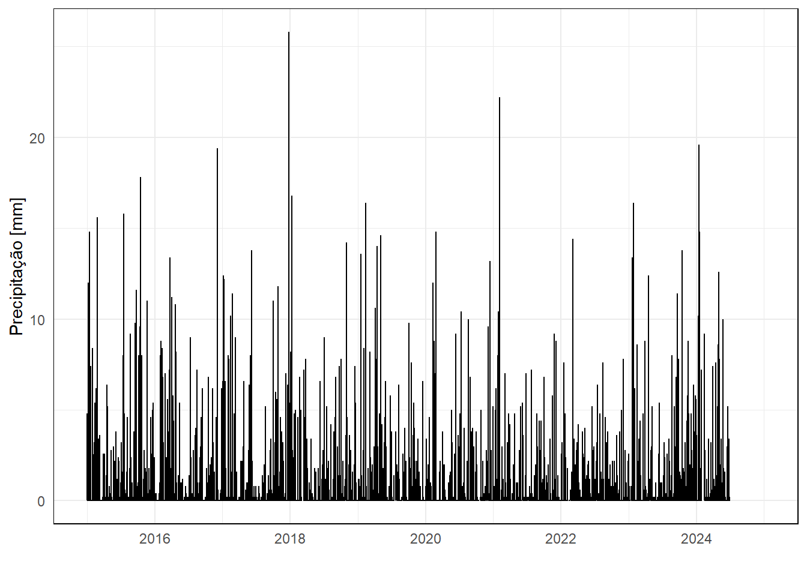
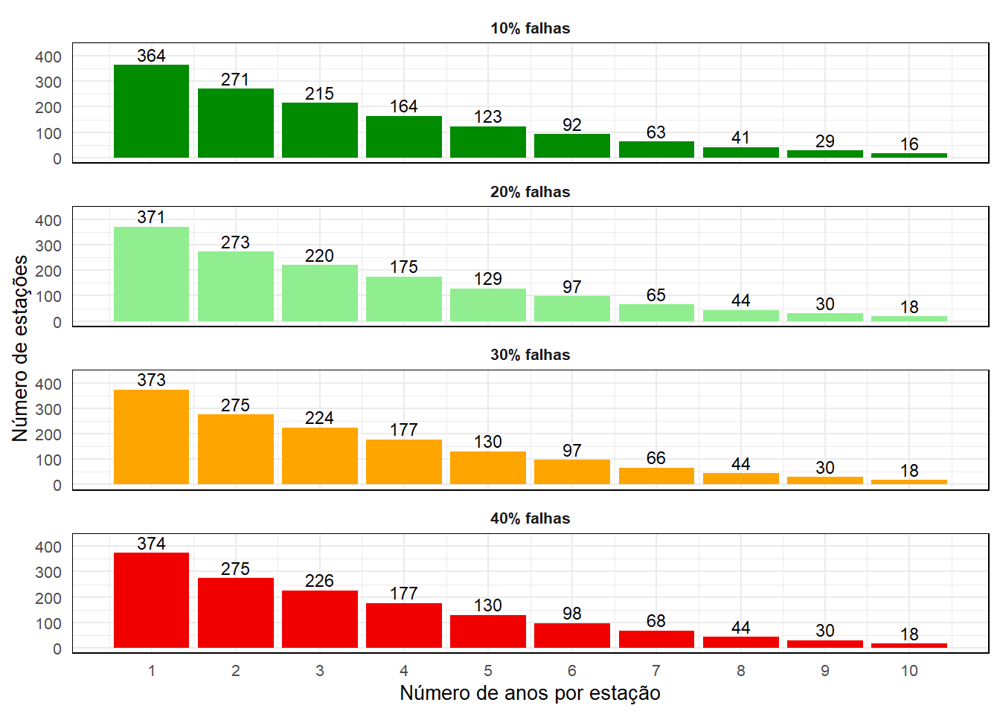

Neste script é feita a leitura e formatações iniciais dos dados subdiários consolidados do Rio Grande do Sul (UFPB-ANA). Séries históricas foram disponibilizadas em formato .PARQUET em duas partes: info, com informações diversas à respeito das estações e séries; e data, contendo as séries históricas em si.
Esse script também é executado diretamente no R através do source() no arquivo rs_subdaily_read_parquet.R.
Pacotes
# Limpar ambienterm(list =ls()); gc()
used (Mb) gc trigger (Mb) max used (Mb)
Ncells 605291 32.4 1378368 73.7 702068 37.5
Vcells 1103507 8.5 8388608 64.0 1928767 14.8
# Instalar e carregar pacotesif(!require(pacman)) install.packages("pacman")
Carregando pacotes exigidos: pacman
pacman::p_load(pacman, tidyverse, # manipulação de dados lubridate, # manipulação de datas arrow, # ler dados no formato 'parquet' ggplot2) # visualização
Dados
Conjunto de dados subdiários consolidados reunidos pelo GTA-UFPB contendo 383 estações do CEMADEN, ICEA, Telemetria (ANA) e INMET disponibilizados no OneDrive. Estes dados brutos se encontram em “base/fonte”.
# Caminho do diretóriopath_dir <-"base/fonte/consolidado/subdiario/"# Listar arquivos c/ extensão ".parquet" no diretório# Os arquivos contém divisões por ano de duas tabelas: info e data## Listar 'data'files_data <-list.files(path = path_dir, pattern ="*.data.parquet",full.names =TRUE)## Listar 'info'files_info <-list.files(path = path_dir,pattern ="*.info.parquet",full.names =TRUE)# Ler dados# list_data <- lapply(X = files_data, FUN = arrow::read_parquet, as_data_frame = TRUE)list_data <-lapply(X = files_data, FUN = arrow::read_parquet)list_info <-lapply(X = files_info, FUN = arrow::read_parquet)# Juntar dadosdf_data <-bind_rows(list_data)[-4] # remover coluna '__intex_level_0__'df_info <-bind_rows(list_info)[-10] # remover coluna '__intex_level_0__'# Manter somente 'df_data' e 'df_info' no ambienterm(list =setdiff(ls(), c("df_data", "df_info"))); gc()
used (Mb) gc trigger (Mb) max used (Mb)
Ncells 1487904 79.5 2490987 133.1 2490987 133.1
Vcells 58324366 445.0 138974424 1060.3 114159124 871.0
Organizar dados
O data frame df_info contém estações repetidas, então vamos limpar mantendo somente e uma observação do campo de códigos da estação gauge_code.
# O arquivo 'df_info' contém estações repetidas, portanto precisamos manter# somente um único registro de cada 'gauge_code'df_info <-slice_tail(.data = df_info, n =1, by ="gauge_code")
Já no data frame df_data há uma incompatibilidade com a forma com que os dados são lidos no R. O R automaticamente atribui um fuso horário a dados no formato “date” de acordo com o fuso horário da máquina do usuário. Sabemos que todos os dados estão na zona UTC-3, então:
# Fuso horário# Todos os dados do conjunto deveriam estar na zona UTC -3# Isso corrige o shift de -2 ou -3 horas nos dadosdf_data <- df_data %>%mutate(datetime =as.POSIXct(datetime, format ="%Y-%m-%d %H:%M:%S", tz ="UTC"), # alterar fusotime_steps = df_info$monitoring_time_step[match(gauge_code, df_info$gauge_code)], # resolução temporalresponsible = df_info$responsible[match(gauge_code, df_info$gauge_code)] # operador ); gc() # resolução temporal
used (Mb) gc trigger (Mb) max used (Mb)
Ncells 1514443 80.9 2490987 133.1 2490987 133.1
Vcells 86250729 658.1 138974424 1060.3 123846096 944.9
used (Mb) gc trigger (Mb) max used (Mb)
Ncells 1573070 84.1 2490987 133.1 2490987 133.1
Vcells 86354378 658.9 138974424 1060.3 123846096 944.9
Preenchimento das datas
O objetivo desse parte é apresentar as etapas para elaboração da função que realiza o preenchimento das datas das séries de precipitação subdiárias fun_fill_dates(). Atualmente este QMD conta somente com a aplicação das funções para gerar um arquivo .PARQUET onde se encontram as séries.
# Ler dados gerados em `rs_subdaily_read_parquet.R`df_data <- arrow::read_parquet("base/gerados/df_subdaily_data.parquet")df_info <- arrow::read_parquet("base/gerados/df_subdaily_info.parquet")
Objetivo
Estamos realizando o preenchimento dessas datas tanto para avaliar a qualidade das séries, mas também para nos permitir escolher posteriorrmente um determinado limite de falhas anuais que queremos tolerar nas séries.
Preenchimento
Vamos então chamar a função que foi escrita utilizando a função source().
used (Mb) gc trigger (Mb) max used (Mb)
Ncells 1604579 85.7 3126321 167 3126321 167.0
Vcells 417621633 3186.3 938467979 7160 748910476 5713.8
Caso necessário (ou por conveniência) quisermos salvar o arquivo comprimido, basta rodar o código abaixo (deixar eval: false, porque gera um arquivo maior que 100 MB, que é o limite de transferência para o GitHub):
Com o data frame com as datas preenchidas (df_subdaily_filled), gerar um data frame “resumo” para avaliar a quantidade de dados disponível no conjunto: percentual de falhas, número de anos “completo”, entre outros.
# Tabela resumodf_summary <- df_subdaily_filled %>%mutate(year = lubridate::year(datetime), # criar coluna c/ anorain_na =is.na(rain_mm)) %>%# TRUE/FALSE se rain_mm é NAgroup_by(gauge_code, year) %>%# agrupar por estacao e por anosummarise(rain_yr =sum(rain_mm, na.rm =TRUE), # acumulado anualn_fail =sum(rain_na), # número de observações c/ NA por anon_obs =n(), # número total de observaçõesfail_prct = n_fail/n_obs*100) # percentual de falhas
`summarise()` has grouped output by 'gauge_code'. You can override using the
`.groups` argument.
Conferir se o preenchimento das séries do CEMADEN está funcionando corretamente.
gauge_cemaden <-"430920901A"df_subdaily_filled %>%filter(gauge_code == gauge_cemaden) %>%ggplot(aes(x = datetime, y = rain_mm)) +geom_line(linewidth =0.5) +labs(x ="", y ="Precipitação [mm]", col ="") +theme_minimal() +theme(legend.position ="none",plot.background =element_rect(color ="white"),panel.border =element_rect(color ="black", fill =NA),legend.key.width =unit(1, "cm")); gc()
Ignoring unknown labels:
• colour : ""
Warning: Removed 26496 rows containing missing values or values outside the scale range
(`geom_line()`).

used (Mb) gc trigger (Mb) max used (Mb)
Ncells 1842487 98.4 3126321 167 3126321 167.0
Vcells 423201392 3228.8 938467979 7160 921475321 7030.3
Avaliação de como se distribuem o número de estações conforme definimos diferentes niveis de tolerância de falhas. São criados 2 vetores de critérios: threshold, que contém possibilidades de percentuais de falha (ex. 10% a 40%) que queremos tolerar; e min_years, para avaliarmos quantas estações possuem pelo menos min_years anos com no máximo threshold % de falhas. A função purrr::map2_int() é usada para iterar sobre dois vetores ao mesmo tempo (.x = threshold e .y = min_years), realizando alguma operação sobre os pares (isso elimina a necessidade de fazer um loop).
# Limitesthresholds <-seq(10, 40, 10)min_years <-1:10# Avaliar quantas estacoes atendem os criterios de falha e nro mínimo de anos analise_series <-expand_grid(threshold = thresholds, # combinar possibilidadesmin_years = min_years) %>%# entre threshold e min_yearsmutate(n_gauges = purrr::map2_int(threshold, min_years, ~{ df_summary %>%filter(fail_prct <= .x) %>%count(gauge_code) %>%filter(n >= .y) %>%nrow() })) # extrair nro estacoe atendem criterios# Visualizaçãocores <-c("green4", "lightgreen", "orange", "#F10000")analise_series %>%mutate(threshold =factor(threshold, levels = thresholds)) %>%ggplot(aes(x = min_years, y = n_gauges, fill = threshold)) +geom_col() +geom_text(aes(label = n_gauges), vjust =-0.3, size =3) +facet_wrap(~threshold, nrow =4, labeller =labeller(threshold =function(x) paste0(x, "% falhas"))) +scale_x_continuous(breaks =seq(min(analise_series$min_years), max(analise_series$min_years), by =1)) +scale_y_continuous(limits =c(0, 430)) +scale_fill_manual(values = cores) +labs(x ="Número de anos por estação",y ="Número de estações") +theme_minimal() +theme(strip.text =element_text(face ="bold"),legend.position ="none",plot.background =element_rect(color ="white"),panel.border =element_rect(color ="black", fill =NA),text =element_text(size =10))

Figura 1: Número de estações que atendem determinado nível de tolerância anual de falhas.
Exportar conjunto de séries
Definir critérios como tolerância de falhas (na_accept) e número mínimo de anos (min_years) para exportar um subconjunto de df_subdaily_filled.
fun_filter_set <-function(data, na_accept, min_years){# Resumir e filtrar dados valid_gauges <- data %>%mutate(year = lubridate::year(datetime)) %>%group_by(gauge_code, year) %>%summarise(fail_prct =sum(is.na(rain_mm))/n() *100, .groups ="drop") %>%# calcular % falhasgroup_by(gauge_code) %>%summarise(valid_years =sum(fail_prct <= na_accept *100)) %>%# nro anos que atendefilter(valid_years >= min_years) %>%# o criterio de falhaspull(gauge_code); gc() # extrair so codigo estacoes # Filtrar estacoes df_valid <- data[data$gauge_code %in% valid_gauges,]return(df_valid)}# Aplicar funçãodf <-fun_filter_set(data = df_subdaily_filled,na_accept =0.2,min_years =8); gc()
used (Mb) gc trigger (Mb) max used (Mb)
Ncells 1896387 101.3 3126321 167 3126321 167.0
Vcells 477979094 3646.7 938467979 7160 921475321 7030.3
Exportar conjunto gerado:
# Exportar como parquet com compressãowrite_parquet(df, sink ="base/gerados/df_subdaily_filled.parquet", compression ="zstd", compression_level =9)